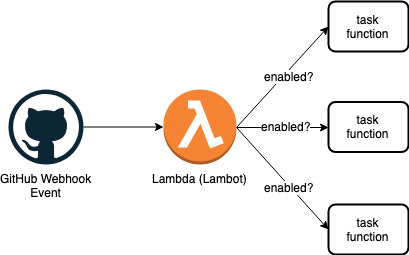

Automation is essential to maximizing throughput, especially when it comes to being able to confidently release quality software. I believe that anything you find yourself repeating is a great candidate to automate. In most cases, these repetitive tasks can be represented as simple functions! So that got me thinking… maybe I can leverage AWS Lambda for this– things like pull-request review hooks and automatic package versioning + publishing.
In many ways, this is like creating a more powerful and customizable version of CodeBuild, CircleCI, or Concourse from scratch (all of which I’ve drawn inspiration from after using)! Moreover, this serverless solution costs nothing when it’s not in use and it’s much more flexible! Ultimately, this led to the creation of our own GitHub webhook “bot” we call Techie. In this post, I want to share how easy it is to create your own extensible bot!
After we’re done, you’ll have a Techie look-alike that is configurable with it’s own YAML file and able to leave comments on untagged pull requests, perform CI code reviews, and automatically version and publish your npm packages!
Feel free to view the completed source on GitHub.
Overview
For brevity, I’m only going to touch on the main aspects of our bot; you can reference everything else in the repo!
Here’s how our bot will work:

- Lambda receives a request triggered by a GitHub webhook event
- Attempt to load and parse our bots config (
lambot.yml) - Run the configured actions
Let’s get to the code!
Making it Configurable
I like the simplicity of YAML syntax, so we’ll expect the configuration to look something like this:
hooks:
# Automatic versioning & publishing
semver: true
# Prefer labels on pull requests; notify if missing.
labels: true
# Run commands on each push and sends a Github status
codereview:
commands:
- echo Installing node modules...
- npm i
- echo Running tests...
- npm test
In our lambda function let’s do the following:
- Get the configuration, preferably from master or another predefined branch so we can consider it our config single source of truth. I’ve also experimented with using the config in the branch where the event is emitted; sometimes that works better!
- Parse the configuration and asynchronously run the tasks.
- Send a response (success or failure).
const yaml = require('js-yaml');
const tasks = require('./tasks'); // An object of supported tasks (functions)
// Helper function that attempts to run a task
function runTask(name, taskData) {
// Ensure valid task provided
if (!tasks[name]) return Promise.reject(`Invalid task name of '${name}' provided.`);
return tasks[name].call(null, taskData);
}
// This is our lambda function
module.exports = async (event, context, callback) => {
const response = JSON.parse(event.body);
const repoOwner = response.repository.owner.login;
const repoName = response.repository.name;
// Retrieve lambot.yml
// If missing, hook failure (lambot.yml is required)
// Else, load and execute tasks
const pendingTasks = await githubClient.get('config', { repoOwner, repoName })
.then((res) => yaml.safeLoad(Buffer.from(res.data.content, 'base64')))
.then((config) =>
Object.keys(config.hooks).reduce((acc, hook) => {
// If hook is enabled, attempt to run it and push to pending task queue
if (config.hooks[hook]) {
acc.push(runTask(hook, { githubEvent, response, config: config.hooks[hook] }));
}
return acc;
}, []))
.catch(() => {
callback(null, respond(500, 'Missing or invalid lambot.yml.'));
process.exit(0);
})
// Wait for all tasks to run
await Promise.all(pendingTasks);
return callback(null, respond(200, 'Success'));
}
I know this is a lot of code to digest, so let’s recap how this will work:
- We’re expecting a YAML configuration (
lambot.yml) to be present in the repository. - If a configuration is missing we’ll respond with a failure, otherwise, let’s try to run the specified tasks asynchronously (they each return a promise).
- Wait for all tasks to run, then send a final response.
Easy enough! Now you might be wondering what a task function looks like… so let’s keep going.
Creating Tasks
You might have noticed our example config includes three hooks… semver, labels, and codereview. Let’s breifly go through how they will work, starting with the simplest– labels.
Label Task
Pull-request labels help us stay organized. The purpose of our label task will be to post a friendly comment on newly opened, unlabeled pull-requests, encouraging the user to add a label.
Here’s the code:
// Newly opened pull-requests without labels will receive a friendly notice
async function labelTask({ githubEvent, response }) {
if (githubEvent === 'pull_request' && response.action === 'opened' && response.pull_request.labels.length === 0) {
const repoName = response.repository.name;
const repoOwner = response.repository.owner.login;
const prNumber = response.number;
// Post comment using the GitHub API
await githubClient.post('comment', {
repoOwner,
repoName,
prNumber,
message: '_Hi :wave:, it\'s Lambot!_\n\n' +
'I noticed this pull request has no assigned labels. :cry:\n\n' +
'Please remember to label your pull requests. That helps keep things organized around here. :slightly_smiling_face:'
})
}
return Promise.resolve();
};
Semver Task
Versioning and publishing npm packages can become quite monotonous. That’s when I got the idea… wouldn’t it be great if we could handle that automatically based off the head commit (it includes the title + commit history if you’re squashing commits), and look for [breaking|feature] (or [ci skip]). For example, a pull-request with [breaking] Major API changes would cause our package to increment and publish a major version.
Now, one challenge when working with Lambda + API Gateway is that your task must complete within 30 seconds. Even if we could install, lint, and test our code in 30 seconds I don’t like the possibility of random timeouts… so this is where we’ll get fancy ✨. For tasks that require heavy lifting, we can offload them to AWS ECS– which can run as long as they need, in any environment we want, only when we need them, therefore being cost-effective. Fantastic!
Here’s what we’ll do:
const BOT_NAME = 'lambot';
// Automatically version and publish repositories that are npm packages
async function semverTask({ githubEvent, response }) {
// Only listen to push events on master (we don't want to version + publish every branch!),
// ignore commits from our bot (to avoid an infinite loop of versioning + publishing)
// ignore [ci skip] commits
if (githubEvent !== 'push' ||
response.head_commit.author.username === BOT_NAME ||
response.head_commit.message.includes('[ci skip]') ||
response.ref !== 'refs/heads/master'
) {
return Promise.resolve();
}
// get_version and push_changes are helper functions baked into our Docker image
const commands = [
'echo "Installing node modules..."',
'npm ci',
// Determine next version
'increment=$(get_version)',
// Create versioned commit; publish package; push versioned commit & tag
'echo "Bumping version (type: $increment), publishing, and pushing..."',
'npm version $increment',
'npm publish',
'push_changes'
];
// Run the semver utility in our custom docker image
return spawnDockerTask({
GIT_REPO: response.repository.clone_url,
GIT_BRANCH: response.ref,
DOCKER_COMMANDS: commands.join('&&')
});
};
In our semver task, we’ll call spawnDockerTask (a utility for running a task in ECS) and pass a list of commands to execute in our container, as well as any additional information our container will need. If the task starts successfully, spawnDockerTask will return a resolved promise.
Adding the Webhook
Finally, we need to setup a repository to use our new bot. This is the easiest part!
Go to your Github repositories Settings > Webhooks and add a new webhook with the following:
- Payload URL:
https://your-api-gateway-url/webhook - Content type:
application/json - Secret: your secret (see:
./lib/config.js) - Events:
Send me everything.(or select only the events you are using)
Wrapping Up
Here’s a fun exercise: try implementing the codereview task yourself. Hint: You’ll need to use the config property passed to our task function. With codereview, the goal is to allow a custom sequence of commands to run on each pushed commit. It’s similar to our semver task, but it also utilizes the status API to report if the commands pass or fail. Once you do that, you’ll practically have built your own CI tool! How cool is that?!
Automation is fun and it maximizes productivity; a win-win if you ask me! We also learned about Lambdas, ECS, and the GitHub API. Now you are fully equipped to create your own custom tasks! Feel free to reference the GitHub API for all the different events you can use. What’s even better is that your bot can run in any repository (as long as it has access and a valid config file)! What else is there to automate? That’s now up to you!
Thanks for reading.
Originally published at beuteiful.com on April 5, 2019.